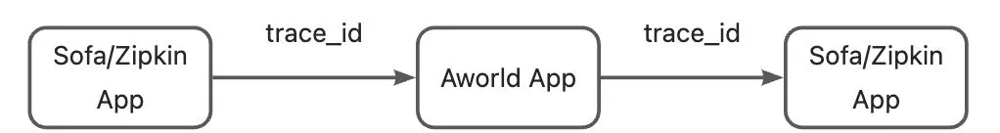
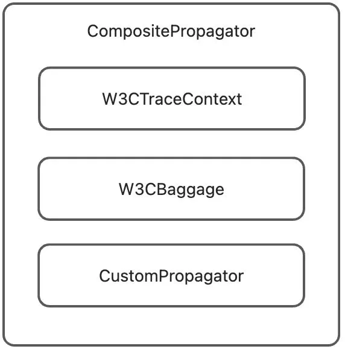

Trace
Overview
The AWorld Trace module is a full-featured distributed tracing system built on OpenTelemetry, providing comprehensive observability capabilities for the AWorld framework. It offers flexible tracing configuration, automatic instrumentation, and manual tracing support, with compatibility for multiple backend storage and export options.
Core Features
- Built on the OpenTelemetry standard, ensuring compatibility with mainstream observability platforms
- Automatic instrumentation: Tracks key components (Agent, Tool, LLM, etc.) without code modification
- Manual span creation and management for fine-grained tracing control
- Built-in in-memory storage and Trace UI Server for quick inspection of trace data
- Seamless integration with third-party observability platforms (e.g., Logfire, Jaeger)
- Highly configurable to meet diverse use-case requirements
Main Components
**TraceManager**: Core tracing manager responsible for creating and managing spans**ContextManager**: Handles propagation of tracing context across components and threads**Instrumentation**: Automatically instruments core framework components**OpenTelemetryAdapter**: Bridges AWorld’s tracing API with OpenTelemetry’s native APIs**TraceServer**: Built-in UI server for visualizing trace data
Quick Start
Enabling Tracing in AWorld
To enable tracing, configure ObservabilityConfig at application startup:
from aworld.trace.config import configure, ObservabilityConfig
# Configure tracing
config = ObservabilityConfig(
trace_provider="otlp",
trace_backends=["memory"], # Use in-memory storage
trace_server_enabled=True, # Enable built-in Trace UI Server
trace_server_port=7079 # UI server port
)
# Apply configuration
configure(config)
Viewing Traces via Built-in UI
Once the Trace UI Server is enabled, access traces at:
http://localhost:7079
The UI provides:
- List of all recorded traces
- Full call chain visualization for individual traces
- Detailed span information (attributes, status, duration)
- Time-based sorting and filtering
Interpreting Trace UI Data

During execution, AWorld automatically creates several core span types to track component behavior:
- Event Span
- Name format:
event.<event_type> - Description: AWorld is event-driven; each event execution is traced as a span prefixed with
event.(e.g.,event.output). - Key attributes:
event.topic: Event topicevent.payload: Event payloadevent.sender/event.receiver: Source and destination
- Name format:
- Task Span
- Name format:
task.<session_id> - Description: Represents a complete task execution.
- Key attributes:
task.id,task.input,task.is_sub_task
- Name format:
- Agent Span
- Name format:
agent.<agent_name> - Description: Traces an agent’s execution lifecycle.
- Key attributes:
agent.name,agent.id,session.id,user.id
- Name format:
- Tool Span
- Name format:
tool.<tool_name>(for MCP tools,<tool_name>= MCP service name) - Description: Captures tool execution.
- Key attributes:
tool.name,agent.name,agent.id,session.id,user.id
- Viewing results: Check child span
event.output.tool_call_result
- Name format:
- LLM Span
- Name format:
llm.<model_name> - Description: Records a single LLM invocation.
- Key attributes:
gen_ai.prompt,gen_ai.prompt.toolsgen_ai.request.*(e.g.,top_k)gen_ai.completion.content,.reasoning_content,.tool_callsgen_ai.duration,gen_ai.first_token_duration- Token usage:
input_tokens,output_tokens,total_tokens
- Name format:
Core Concepts
Trace
A complete call chain composed of multiple spans, representing an end-to-end operation (e.g., one user task). Identified by a unique Trace ID.
Span
A single operation unit within a trace, representing a specific execution step. Contains:
- Name, start/end time, duration
- Key-value attributes
- Status (success/failure)
- Parent Span ID and list of child spans
TraceContext
Carries tracing metadata (Trace ID, Span ID, etc.) across services in distributed environments to link related spans.
TraceProvider
Factory for creating Tracer instances. AWorld abstracts tracing implementation, allowing pluggable providers (default: OpenTelemetry).
Tracer
Component that creates and manages spans in application code.
SpanConsumer
Processes span data for custom logic—e.g., exporting to backends or generating real-time agent trajectories.
Usage Example
from aworld.trace.span_consumer import SpanConsumer, register_span_consumer
from typing import Sequence
@register_span_consumer
class MySpanConsumer(SpanConsumer):
def consume(self, spans: Sequence[Span]) -> None:
for span in spans:
print(f"Span processed: {span.get_name()}")
Instrumentation
Automatic tracing of core components via bytecode enhancement or decorators—no code changes needed. AWorld includes built-in instrumentors (all enabled by default):
**EventBusInstrumentor**: Traces event execution and parent-child relationships**AgentInstrumentor**: Auto-traces agent runs**ToolInstrumentor**: Auto-traces tool executions**LLMModelInstrumentor**: Auto-traces LLM calls**ThreadingInstrumentor**: Propagates trace context across threads- Web Framework Instrumentors:
FastAPIInstrumentorFlaskInstrumentor
**RequestsInstrumentor**: Traces outbound HTTP calls
Enabling Example (FastAPI)
from aworld.trace.instrumentation.fastapi import FastAPIInstrumentor
FastAPIInstrumentor().instrument()
Integration with Third-Party Observability Platforms
Built on OpenTelemetry and using the OTLP protocol (the de facto standard for trace data), AWorld integrates seamlessly with a wide range of observability platforms.
Commercial Platforms
Logfire (https://logfire.pydantic.dev)
- Create a project on Logfire and obtain a Write Token
- Configure AWorld:
from aworld.trace.config import configure, ObservabilityConfig
config = ObservabilityConfig(
trace_provider="otlp",
trace_backends=["logfire"],
trace_base_url="https://logfire-us.pydantic.dev",
trace_write_token="your-logfire-write-token"
)
configure(config)
Open-Source Platforms
Jaeger (https://www.jaegertracing.io/)
Deploy Jaeger per official docs, then configure AWorld:
config = ObservabilityConfig(
trace_provider="otlp",
trace_backends=["other_otlp"],
trace_base_url="http://localhost:4317", # Jaeger OTLP endpoint
trace_write_token=None
)
configure(config)
Custom Tracing
Using Context Manager
import aworld.trace as trace
with trace.span("custom_operation", attributes={"custom_attr": "value"}):
result = perform_custom_operation()
Decorator Approach
@trace.func_span("custom_function", attributes={"function_type": "business"}, extract_args=True)
def custom_function(param1, param2):
return result
# `extract_args=True` logs function arguments as span attributes (default: False)
Adding Attributes to Current Span
Manual Span Lifecycle
span = trace.span("manual_operation")
try:
result = perform_operation()
span.set_status("OK")
finally:
span.end()
Advanced Features
Auto-Tracing Configuration
Automatically trace all function calls in specified modules:
trace.auto_tracing(
modules=["my_module", "another_module"],
min_duration=0.1 # Only trace functions taking >100ms
)
Trace Namespace Isolation
Isolate traces from different applications using environment variables:
Integration with Other Trace Propagation Protocols
By default, AWorld uses OpenTelemetry’s W3C TraceContext propagation. To interoperate with systems using other protocols (e.g., Zipkin B3, SOFATracer), implement custom propagators.

Core Concepts
**Propagator**: Interface for injecting/extracting trace context**TraceContext**: Holdstrace_id,span_id, flags, etc.**Carrier**: Transport medium (e.g., HTTP headers, message headers)
Architecture
AWorld uses a **CompositePropagator** to support multiple protocols simultaneously.

Implementing a Custom Propagator
- Subclass
**Propagator**:
from aworld.trace.base import Propagator, TraceContext, Carrier
from typing import Optional
class CustomTracePropagator(Propagator):
_CUSTOM_TRACE_ID_HEADER = "X-Custom-Trace-ID"
_CUSTOM_SPAN_ID_HEADER = "X-Custom-Span-ID"
_CUSTOM_FLAGS_HEADER = "X-Custom-Flags"
def extract(self, carrier: Carrier) -> Optional[TraceContext]:
trace_id = self._get_value(carrier, self._CUSTOM_TRACE_ID_HEADER)
span_id = self._get_value(carrier, self._CUSTOM_SPAN_ID_HEADER)
flags = self._get_value(carrier, self._CUSTOM_FLAGS_HEADER) or "01"
if not trace_id or not span_id:
return None
return TraceContext(
trace_id=trace_id,
span_id=span_id,
trace_flags=flags,
version="00",
attributes={"custom_protocol": "v1"}
)
def inject(self, trace_context: TraceContext, carrier: Carrier) -> None:
if not trace_context:
return
carrier.set(self._CUSTOM_TRACE_ID_HEADER, trace_context.trace_id)
carrier.set(self._CUSTOM_SPAN_ID_HEADER, trace_context.span_id)
carrier.set(self._CUSTOM_FLAGS_HEADER, trace_context.trace_flags)
if "custom_protocol" in trace_context.attributes:
carrier.set("X-Custom-Protocol-Version", trace_context.attributes["custom_protocol"])
- Register the Propagator:
from aworld.trace.propagator import get_global_trace_propagator, CompositePropagator
global_propagator = get_global_trace_propagator()
propagators = list(global_propagator._propagators) if isinstance(global_propagator, CompositePropagator) else [global_propagator]
propagators.append(CustomTracePropagator())
new_propagator = CompositePropagator(propagators)
# Replace global propagator
from aworld.trace.propagator import _GLOBAL_TRACE_PROPAGATOR
_GLOBAL_TRACE_PROPAGATOR = new_propagator
This enables seamless trace context propagation between AWorld and external systems using non-OpenTelemetry protocols.